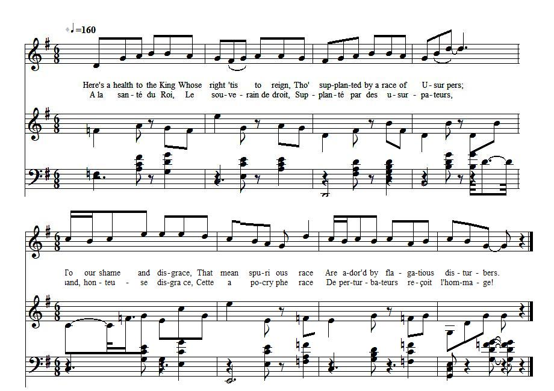

Here's a Health to the King!
A la santé du roi!
from "The True Loyalist", page 73
Tune - Mélodie"Come, let us prepare..."
as stated in The True Loyalist page 73
Sequenced by Christian Souchon
|
To the tune:
English Air (6/8 time). The tune appears: - in Watts's Musical Miscellany (iii. 72), - British Melody (1739), - The Dancing Master (vol. iii.), - and several ballad operas including "The Village Opera. The tune was used as the vehicle for several songs and appears in other versions and titles, including: - "The Enter'd Apprentice's Song" in "The Musical Mason", and -"Ye Commons and Peers" in "A Complete Collection of Old and New English and Scotch Songs" (1735). Source: Chappell ("Popular Music of the Olden Time"), vol. 2, 1859; pgs. 105-106 quoted by "The Fiddler's Companion" (cf. Links). |
 |
A propos de la mélodie:
Air anglais (6/8). On trouve cette mélodie: - dans les "Miscellanées musicales" de Watt (iii. 72), - dans "La mélodie britannique" (1739), - dans "Le maître à danser" (vol. iii.), - et dans plusieurs "opéras ballades" dont l'"Opéra villageois". Il sert de timbre à de nombreux chants et apparaît dans d'autres versions et sous d'autres titres, dont: - "Le chant d'admission de l'Apprenti" dans le "(Franc) Maçon musicien", et -"Vous, Communes et Pairs" dans "Recueil complet de chants anglais et écossais anciens et modernes" (1735). Source: Chappell ("Musique populaire de l'ancien temps"), vol. 2, 1859; pp. 105-106 cité par "The Fiddler's Companion" (cf. liens). |

|
Here's a Health to the King
1. Here's a health to the KING, [1] Whose right 'tis to reign, Tho' supplanted by a race of Usur[pe]rs; [2] To our shame and disgrace, That mean spurious race Are ador'd by flagatious disturbers. 2. Such an upstart base crew, We're so pester'd with now, Whose ancestor was, Count Con[ig]sm[arc]k's bastard: [3] By a nation of fools, And degenerate souls, We're beray'd, to the race of that blackguard. 3. The Revolution did bring A vile Sodomite K[in]g, What a shocking curs'd monster in nature. [4] Yet they glory'd in him, Tho' it was in their shame To embrace that abominable creature. 4. Heaven pity our grief, And send speedy relief, From taxations laid by intruders; And from perj'ry [5], the creed Of the curs'd Ger[m]an breed, From their mercenary slaves and deluders. Source: "The True Loyalist; or, Chevaliers's Favourite: being a collection of elegant songs, never before printed. Also several other loyal compositions, wrote by eminent hands." Printed in the year 1779. |
A la santé du roi!
1. A la santé du Roi, [1] Le souverain de droit, Supplanté par des usurpateurs, [2] Quand, honteuse disgrâce, Cette apocryphe race Reçoit l'hommage des perturbateurs! 2. Ce tas de parvenus Qui ne nous lâche plus, Issus d'un bâtard de Konigsmarck, [3] Tout un peuple d'idiots D'imbéciles, de sots Qu'avilissent ceux qui mènent leur barque! 3. Un homme aux mœurs proscrites, Un vil roi sodomite: Fut le fruit de la révolution! [4] Et pourtant ils plastronnent, Ces êtres sans vergogne, D'être embrassés par l'ignoble fripon. 4. O, que le Ciel, des taxes Vite nous débarrasse, Des impôts créés par l'imposteur! Ainsi que du parjure [5] Que la Germaine ordure Impose; de ses sbires et zélateurs. [5] (Trad. Christian Souchon (c) 2011) |
|
[1]
King
: James VIII.
[2] Usurpers : The House of Hanover. [3] Königsmarck : See Came ye frae France? [4] Sodomite : William III. See A parcel of rogues [5] Perjure : Act of Abjuration. See Great James , note 2. |
[1]
Roi
: Jacques VIII.
[2] Usurpateurs : la Maison de Hanovre. [3] Königsmarck : Cf. Viens-tu de France? [4] Sodomite : Guillaume III. Cf. La bande de chenapans [5] Parjure : Acte d'Abjuration. Cf. Grand Jacques , note |